{kind=link}
# load tissue cartography modules
from blender_tissue_cartography import io as tcio
from skimage import transform
# load image
image = tcio.adjust_axis_order(tcio.imread("Drosophila_CAAX-mCherry.tif"))
subsampling_factors = [0.5, 0.5, 0.5] # example subsampling factors for x, y, z axes
subsampled_image = transform.rescale(image, subsampling_factors, channel_axis=0, preserve_range=True)
tcio.write_h5("Drosophila_CAAX-mCherry.tif_subsampled.h5", subsampled_image, axis_order="CZYX")Blender add-on tutorial
You can use the tissue-cartography in this repository in two ways: as Python library, and as an add-on for the 3d creation software blender. This tutorial covers the add-on, which has an interactive, graphical user interface. Use it to quickly process a new dataset, or if you are not a coding expert. Dynamic datasets (multiple time points, or multiple samples) are covered in the next tutorial.
The add-on workflow starts with 2 items: a 3D image as a multipage .tiff, and a volumetric segmentation of it into “inside” and “outside” of the object you want to extract. The surface of interest onto which the image is projected is the inside-outside boundary. The tutorial appendix “3D segmentation with Ilastik” explains one way to segment your data. Alternatively, you can load the surface directly into Blender. You can also generate the surface from a point cloud, for example, if your surface is a thin sheet and not the boundary of a solid object (see this tutorial).
Installation
Install Blender. We recommend the LTS version 4.5.
Download the add-on
.zipfrom GitHub. Choose the file that matches your operating system (e.g.linux_x64).- If your OS is unavailable, download the add-on source code, and install the python library
scikit-imagein Blender’s Python interface.
- If your OS is unavailable, download the add-on source code, and install the python library
Download the folder with the test dataset for the tutorial.
Blender user interface
We will use Blender for visualization, mesh editing, and cartographic projection of surfaces (known as “UV mapping” in the graphics community). Blender’s user interface can be slightly overwhelming at first, but don’t despair, it is very easy to learn. There are many great blender tutorials available on the web, and the manual can be found here, from which most of the material in this tutorial is taken. Many people use blender, so when you have a question of the form “How do I do X in blender?”, a Google search will probably answer it. We start with lightning overview of the part of Blender’s user interface relevant to tissue cartography. We assume you are using Blender 4.3 or newer.
Starting Blender
Start launching Blender and opening a new, empty file, and save it to disk with Ctrl+S:

Your blender interface has three main parts: - Top bar with the “File” menu for opening, saving, and exporting models, and the choice of the different “Workspaces” - “Areas” in the middle, your workspace - “Status Bar” at the bottom, shows relevant shortcuts and messages

Polygonal meshes
Blender represents surfaces in 3D as polygonal meshes: collections of points (vertices), edges, and faces. You can see the vertices and faces by selecting the “Wireframe” display option:

Import a mesh
Meshes can be saved and loaded in the .obj format, and you can use external tools to create and edit meshes. Try importing a mesh, like (Drosophila_reference.obj) from the test dataset. You can either drag and drop it into blender, or click “File -> Import” on the top left.
Important: axis order When importing a mesh into Blender, you have to choose how Blender interprets the \(x,y,z\) axes. It is important to keep this choice consistent - “Forward axis: Y” and “Up axis: Z”
Navigation
Use the scroll wheel to zoom in/out, click on an object to select it (it should be highlighted in orange), and use the Navigate gizmo to rotate the axes. Click the “hands” button to move your view.

Workspaces
Blender has different “workspaces” for different 3d tasks, selected using the top bar. Right now, we are in “Layout”, a general-purpose workspace for viewing your blender scene. It has three main parts:
“3d viewport” (center).
“Outliner” (top right). Controls what is in your scene and how it is shown. You can toggle mesh visibility, rename, or delete them.
“Properties” (bottom right). This section contains several tabs. The most important ones for us are:
- “Scene”: This is where the add-on lives
- “Object”: set position, scale, visibility, of your meshes. Lock the mesh positions to avoid moving the accidentally
- “Modifier”: apply filters/transformations to your mesh, for example smoothing or remeshin

Important workspaces
On the top bar, you select the workspace. We will mainly use the following:
“Layout”: Loading and inspecting data, operating the add-on
“UV editing”: “unwrap”/project meshes into the 2D plane.
“Shading”: Visualization
Installing add-ons
Now we install the add-on: Click “Edit -> Preferences -> Add-ons -> Add-on Settings -> Install from disk” and select the file you just downloaded. You may need to restart Blender. The add-on can now be found under “Scene -> Tissue Cartography (V2)”.
Add-on user interface: data loading and visualization
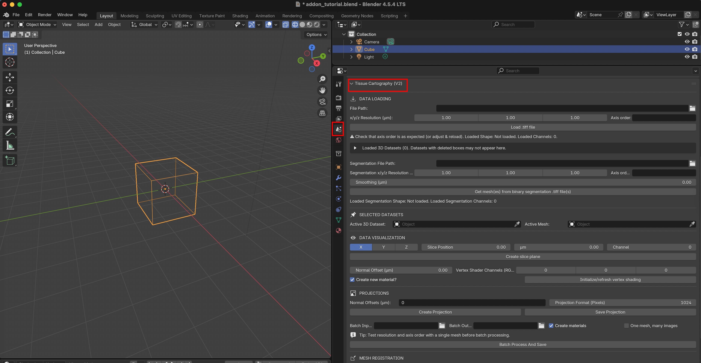
We will now go through the add-on user interface step by step.
Data loading
To import a 3D .tiff file, select the “File Path” and click “Load .tiff file”. You need to specify the X/Y/Z resolution of your image in \(\mu m\) for the X/Y/Z axes, and the order of the axes in the .tiff file (as a string like xyz or cxyz if you have multiple channels).
Multi-channel data The add-on supports both single-channel and multi-channel data (so .tif files with 3 or 4 dimensions). For time-series data, you need to provide one .tif per time point (see section on “Batch Processing” below).
Let’s load the test dataset Drosophila_CAAX-mCherry.tif, an in toto image of the early Drosophila embryo with a fluorescent marker for cell membranes. The resolution is \(1.0 \mu m\) for all axes. You can open it in FIJI:
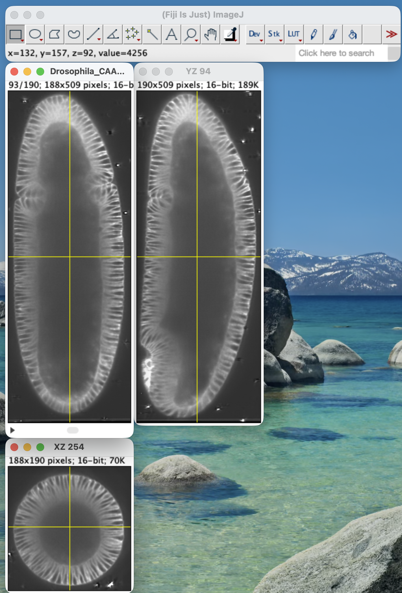
To load the dataset into Blender, click on “File Path” to select the .tif file. After import, you should see a BoundingBox mesh that represents the image volume:

Unloading data
In the add-on, each 3D image is associated to a BoundingBox. The 3D images are not saved to disk - you need to reload the image data if you restart Blender. The currently loaded datasets can be seen in the dropdown menu. You can unload datasets you don’t need anymore, especially if your computer runs out of memory. BoundingBox meshes stay in the Blender file even if you deleted the 3D image data.
⚠️ Axis order problems
Check the “shape” of 3D data loaded into the add-on (image bounding box). If it looks off, adjust the axis order and/or spatial resolution. For instance, if the Z-axis of a confocal image stack is not correctly recognized, the image will look “squashed”.
Loading a segmentation
Next, we need to load the “surface of interest” (SOI) we want to extract from the 3D data and project to 2D. You can do this in two ways:
Import a surface mesh created with external tools.
Load a 3D segmentation.
Let’s load the example segmentation Drosophila_CAAX-mCherry_subsampled-image_Probabilities. It is a 3D .tiff with black and white values, indicating the “outside” and “inside” of the embryo:

The resolution of the segmentation .tiff can be different from the 3D image (often, you downsize images, so the segmentation software is more rapid). With the smoothing parameter, you convert the “pixelated” 3D segmentation into a smooth mesh. You should now see the surface of interest inside the image bounding box:
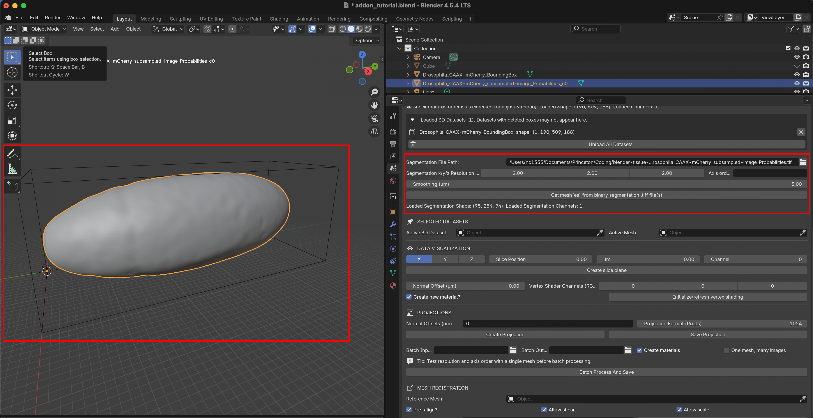
⚠️ Volume segmentation
The add-on expects a segmentation of a 3D volume of which the surface is the boundary (e.g., the sphere is the boundary of a solid ball).
More on segmentation and surface extraction
This repo does not contain any image segmentation tools as excellent software is already available. See tutorial XXX for how to use Ilastik to segment out your SOI. We will also cover remeshing: operations that improve the quality of your mesh and can make tissue cartography run much faster.
Loading a pre-computed mesh
If you already have a mesh, you can load it into Blender via drag-and-drop. Try it with Drosophila_CAAX-mCherry_mesh_remeshed.obj. If you create your mesh with an external tool, keep in mind:
Mesh units Importantly, the units of your mesh coordinates need to be in physical units, i.e. microns (and not pixels)!
Mesh axis order When importing a mesh into Blender, you have to choose how Blender interprets the \(x,y,z\) axes. It is important to keep this choice consistent - select “Forward axis: Y” and “Up axis: Z”
Big datasets and downsampling
For big volumetric datasets (>500MB or bigger), we recommend creating a downsampled version (reducing the reolution by 2x along each axis creates an 8x smaller dataset). Use the downsampled version to (a) segment out the object of interest (see tutorial below) and (b) quickly test the tissue cartography process. Once you are happy, load the full size data (don’t forget to change the resolution). Downsampling can be done in Fiji.
Selected datasets
You can load multiple surfaces and 3D images into Blender at once. The “Selected datasets” panel determines which one is currently active. The add-on operations are applied to the currently active dataset. Select the BoundingBox as active 3D dataset, and the embryo surface as active mesh.
Data visualization
Before we carry out cartographic projection, we can visualize the 3D data in Blender. This is also a good check whether data loading and surface import have worked correctly.
Orthogonal slices
The first option is to show slices of the data along the X/Y/X axes. Use the slider to select the position of the slice and click “Create slice plane”. To preview the image data, select “Material preview” in the top right corner. Let’s toggle the visibility of the mesh off so we can see the slice:
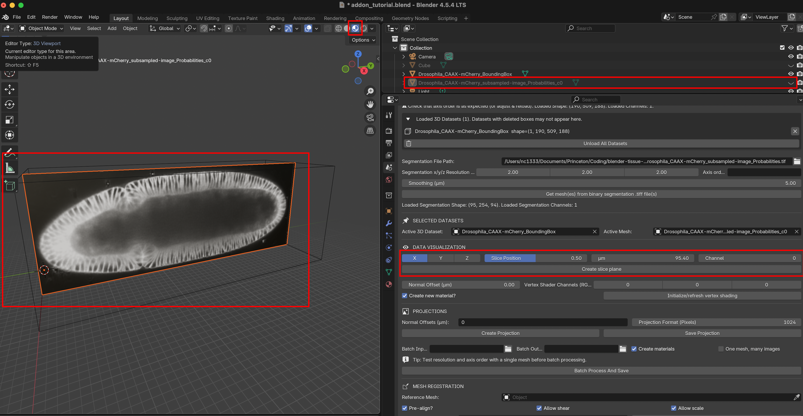
Vertex shading
The second option is to project the image onto the vertices of the mesh to generate a preview of good since it makes everything run faster, but it means that vertex shading will be blurry. Fortunately, it is only a preview of the high-quality projections we will create below. The mesh is usually not as “highly resolved” as the full data (i.e., it has a smaller number of vertices than the number of pixels along each axis). This is good since it makes everything run faster, but it means that vertex shading will be blurry.
The Normal Offset controls which part of the image is projected to the mesh. For example, a value of “4” means that we show the intensity 4 microns inside the surface along the surface normal. This option allows visualizing different layers of the data, like peeling off “onion layers”.
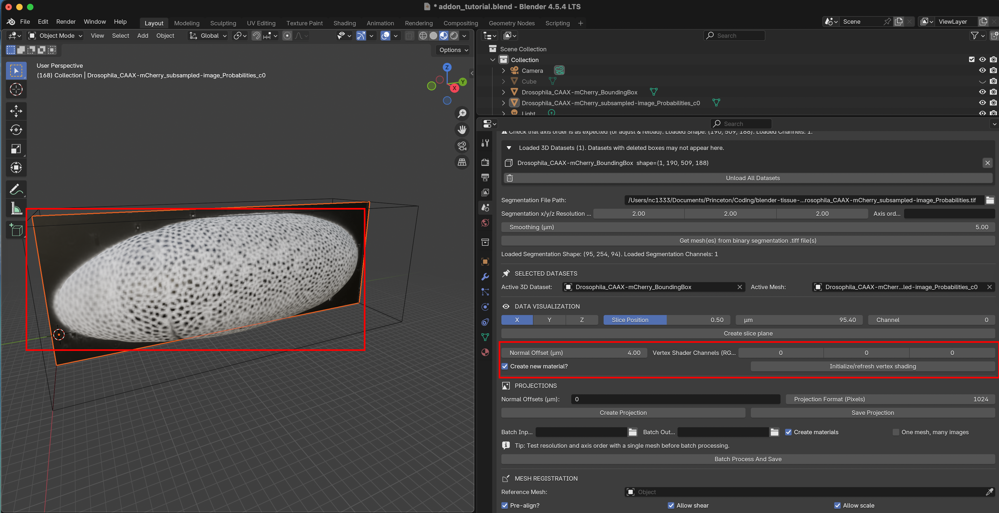
Volumetric Image - Surface alignment
To project image intensity onto the surface, the add-on needs to know “where” in the image volume each surface point lies. It is essential that your image and your surface are correctly aligned. Move the surface mesh relative to the bounding box (press G) , refresh the vertex shading, and see what happens:
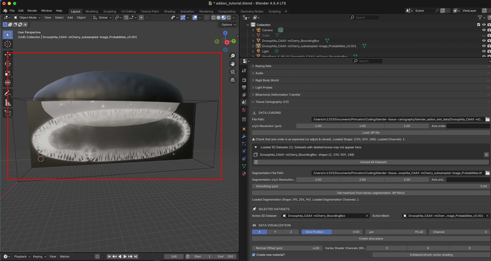
The surface is no longer correctly aligned with the image data, and so the “wrong” intensities get projected on the mesh. The part outside the image becomes black (missing data). If you move the BoundingBox and the surface together, they stay aligned. Incorrect alignment is a common source of problems.
Press Ctrl + Z to undo.
Fixing surfaces: remeshing and modelling
Cartographic projection with the UV editor
Now we get to the heart of tissue cartography. We will create a projection that “unwraps” the surface of interest into a 2D plane, much like a map of the globe. This process is called UV mapping in computer graphics. For details, please take a look at the introduction to the UVs and to the UV editor on the Blender website. You should start UV mapping only once you are happy with the surface mesh and its alignment. Editing a mesh usually corrupts the UV map.
The UV map defines how your 3D mesh (coordinates X/Y/Z) is mapped to 2D (coordinates U/V, hence the name). Here is an example from the Blender website:
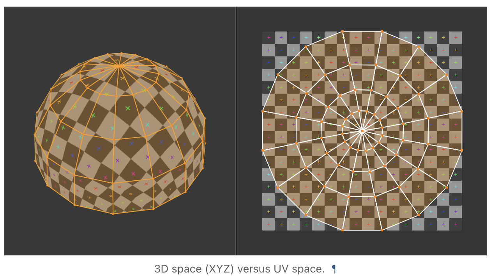
In computer graphics, it is used to map images from 2D to a mesh (which allows painting on 3D models in video games). Here, we use it for the opposite purpose: projecting 3D volumetric images to 2D.
The UV Editing workspace
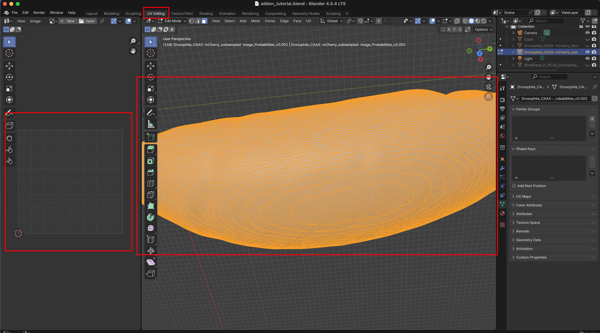
Switch over to the UV Editing workspace. On the right, you see your selected mesh, on the left its projection into the 2D UV square. At the moment, it is empty. Notice also that we are now in “Edit Mode” since we will edit a property of our mesh, the UV map.
The currently selected part of the mesh will be shown in orange. Note: for UV mapping, press 3 to go into “face select” mode. 1 selects mesh vertices, and 2 edges. To see the selected region clearly, we deactivate the material preview.
UV mapping 101
Blender has many methods for creating cartographic projections, from cylindrical and spherical projections to more sophisticated algorithms that minimize distortion. A good cartographic projection that is adapted to your mesh geometry will make visualization and image analysis much simpler.
The algorithms are available under “UV-> Unwrap”. Some algorithms have parameters you can tune in a box that will appear in the bottom right corner.
Let’s press “3” and “A” to select all faces of a mesh, and use the fully automatic “Smart UV project”:

On the left, we now see how out mesh was unwrapped into the UV square. Since the surface was originally closed, it must be “cut” into several pieces to be mapped into the UV square. These are called UV islands, and the boundaries between them are called seams. In this case, the seams were placed automatically, but you can also choose them manually. You can also manually edit the projection created by the algorithm (e.g., move the UV islands).
Selecting a part of the mesh
Often, you only want to project a part of the mesh, or define a seam. To do this, use the selection tool: press 3, then C and scroll to select the brush size. Only the orange, selected part of the mesh will be projected.
Defining seams
For meshes that need to be “cut up”, we recommend choosing the seams manually. Press 2 to go into edge selection mode, select a loop along which you want to cut, right-click, and select “Mark seam”. Seams should show up in red (from the Blender website):
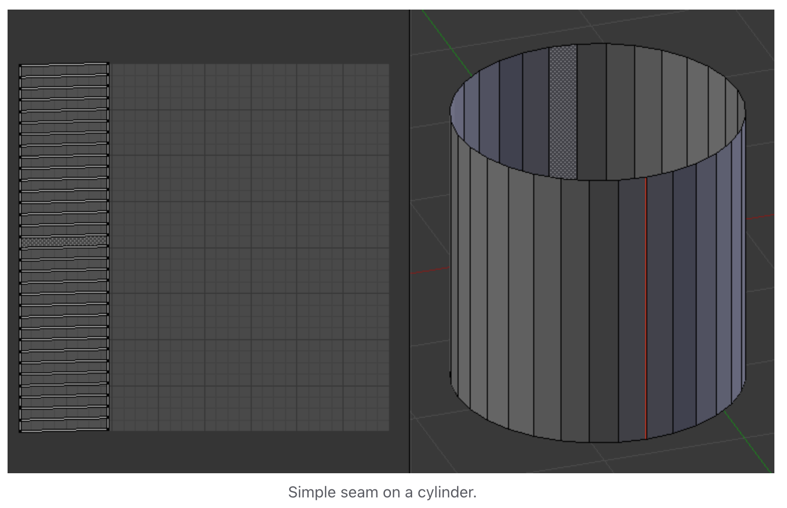
Here are two short-cuts, so you don’t have to select all edges by hand:
Select two vertices and find the shortest path between them. Press
1for vertex mode,right clickon the initial vertex, holdctrlandleft clickon the final vertex, then press2to switch back to edge mode.Select a region in face mode (press
3andCfor the circle select tool), and use “Select -> Select loops -> Select boundary loop”.
Unwrapping algorithm recommendations
The Blender documentation has a great guide on how to unwrap meshes. The “minimum stretch” projection algorithm is a great choice since it … minimizes stretch. If your mesh has a simple geometry, you can use a spherical, cylindrical, or axis projection. These algorithms can easily be applied to many meshes (time points, samples) in batch. You generally want a UV map that minimizes distortion (how much the mesh is stretched when unwrapping). Distortion can be visualized in the left panel of the UV editor under “Overlays”.
Self-intersections
It is important to try to unwrap the mesh while avoiding self-intersection (where the mesh is folded onto itself in 2D). This is bad because the multiple 3D positions are mapped to the same cartographic location. When you project image data, different 3D locations will be written to the same 2D pixel, and it will be a mess. For example, if you use the “project from view” method on the current mesh, the left and right side of the embryo get collapsed.
Improving UV maps
The UV mapping process is iterative. Make an initial UV map, look at the projection and UV distortion, and then improve the map. In the left part of the UV editor, you can directly edit the UV map. For example, try moving UV islands around.
Exporting meshes
If you wish, you can export the surface mesh with its UV map, for example to load it into a Python pipeline created using the tissue cartography python library.
Click on “File -> Export” and export as .obj:
Important: export settings
- Always export as
.obj - Choose “Forward axis: Y” and “Up axis: Z” - this keeps the axis order consistent.
- Tick the box that says “Include Selection only” - otherwise you might export multiple meshes
- Include “UV coordinates” and “Normals” - this data will be important in the following
- Select Triangulated Mesh - the algorithms in this software package are designed to work with triangular meshes.
Add-on user interface: making projections
Projections
Now that the surface has UV map that defines how it is unwrapped, we can project the image intensity into the plane. Without a UV map, this process will throw an error.
First, select the normal offset(s). The add-on can create multi-layer projections, analogous to peeling off the layers of an onion. Each layer is offset inwards/outwards from the surface along the normal direction. Negative resp. positive offsets move inwards resp. outwards. To create a multilayer projection, enter multiple offsets separated by a ,, for example 2,4,6. This will result in a “z-stack” with a 2-micron spacing that follows your surface.
Next, select the pixel resolution. The output will always be a square image, in this case, 1024 * 1024 pixels. Make sure you have selected the correct mesh and 3D dataset, and click “Create Projection”. The computation can take a few seconds:

You should see the blurry vertex shading replaced by a high-resolution projection.
The projected data will remain associated to the mesh even if you close blender. However, running a new projection will overwrite it (you can make a copy of the mesh instead).
Saving projections
Use the “Save Projection” button to save the projections to disk as a multipage .tif. Saving creates a folder, which we will call test_projection:

Let’s open FIJI and our file browser to inspect the files that were saved:

On the left, test_projection_ProjectedImageData.tif is a z-stack showing the projected image data at 2, 4, and 6, microns inwards from the surface defined by our mesh. To enable quantitative analysis, the add-on saves 3 .tif files with geometric information:
test_projection_ProjectedPositions.tif: the 3D X/Y/Z position of the surface in microns, for each pixel of the projected image data.test_projection_ProjectedNormals.tif: the X/Y/Z components of the unit normal vector to the surface, for each pixel of the projected image data.test_projection_LocalResolution: the “local resolution” in microns/pixel at each pixel.
Images 1 and 2 have 3 channels,for X/Y/Z, yielding an RGB image in FIJI. Using the geometry information, you can map positions in the projection back into 3D. For example, you may segment cells in the 2D projection, and then locate them back in 3D space. Using the local resolution, you can correctly compute the cell area from the 2D segmentation (multiply 2D cell area by the local resolution). For more details, see the methods paper.
Importantly, the projection is different from a usual microscopy image: because it is a cartographic projection, it can be distorted, like Alaska in a Mercator projection:

The circles on this map from Wikipedia indicate the “local resolution” of the map: where the circle is bigger.
⚠️ Stretch distortion
In addition to local scale change (area distortion), cartographic projections can also induce stretch distortion, characterized by a stretch axis and strength. This information is not saved to disk. Stretch distortion can be computed and compensated for using the diffgeo module from the Python library. We recommend using UV maps that minimize stretch distortion (“conformal” maps).
Batch processing
To process multiple datasets (for example, different frames of a movie), use the batch processing tool. It is best to test with a single mesh projection before running batch mode.
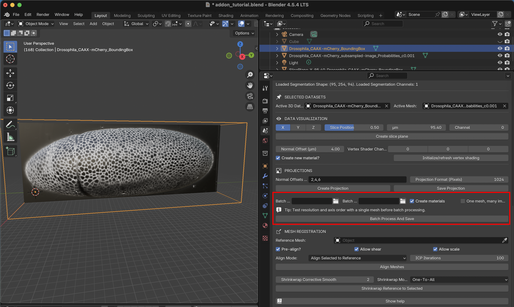
The tool works as follows
Load the surface meshes for all datasets into Blender. All meshes need to have a UV map (see below on how to create UV maps for multiple meshes, like frames from a movie)
The 3D images will be read in from the selected “Batch Input” folder one by one. All image datasets must have the same resolution and axis order.
Load at least one of the image datasets into Blender as a
BoundingBox, and select it under “Selected Datasets” in the add-on. The Active 3D Dataset provides the spatial reference (position/orientation) and resolution. Axis order is taken from the Data Loading section.The batch processing tool has two modes. Single-mesh mode (“One mesh, many images”): uses the active mesh for every file in the input directory. This is useful when the same surface is used across many image datasets.
If you do not check this option, you must Blender-select as many meshes as there are 3D images in the “Batch Input” folder. Blender-selected meshes will show up as orange in the viewport and outliner (top right corner). Meshes and TIFF files are matched by alphanumeric sort order: the first mesh (A→Z by name) is paired with the first file (A→Z by stem), and so on. The number of selected meshes must equal the number of TIFF files in the input directory.
Batch processing directly saves results to disk, in the selected “Batch Output” folder. Click “Batch process and save” to start the process. Note that this can take a moment and Blender will be unresponsive while the add-on is processing.
Visualizations with the Shading editor
Blender uses Materials to determine what surfaces in the viewport look like. These can be found in the “Shading” workspace. You can also use rendering to generate high-quality images (or movies!) or your data. This is beyond the scope of the tutorial.
When you make a projection or use vertex shading, the add-on generates a material that shows the image intensity on the mesh. Thanks to our UV map, we can take any square picture and project it onto the 3d mesh. You can fine-tune the materials in the “Shading” workspace. For example, you can adjust brightness and contrast, or mix together different channels. Let’s take a look:
In the viewport you see the mesh and its texture. On the right, you see the projected image (the same we inspected in FIJI, but now internally in Blender). At the bottom is the Shading editor, which uses a combination of nodes to map the projected image onto the surface of the mesh. The different layers of our multilayer projection are available as inputs, are routed through the Principled BSDF node (which simulates how light reflects from our mesh), into the material output. You can edit and reconnect the wiring using your mouse. Via Shift+A, you can add new nodes, like a mixing node to combine different images, or a brightness adjustment node. The possibilities are vast and explained in the blender documentation.
Visualizing UV maps
To visualize a UV map (what gets mapped where?) and its distortion, create an image (Shift+A, then type “Image texture”) input, select “New +”, and select “Generated Type” as “Color grid”. You can hook up this image to the shader, and the grid will be projected to 3D. This tells you which region goes where, and how distorted it is:
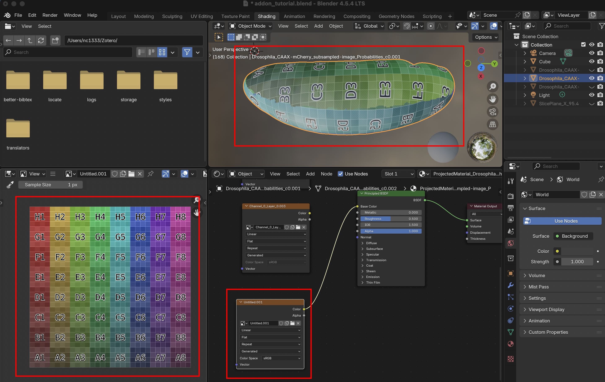
Annotating data
You can annotate the projected data in Blender using the “Texture Paint” workspace. This allows you to paint on the 3D surface (for example, highlighting some cells you are interested in), and have the data saved to 2D on top of the projected image data. You can save the results to disk using the “Image” button. Here is a simple example:
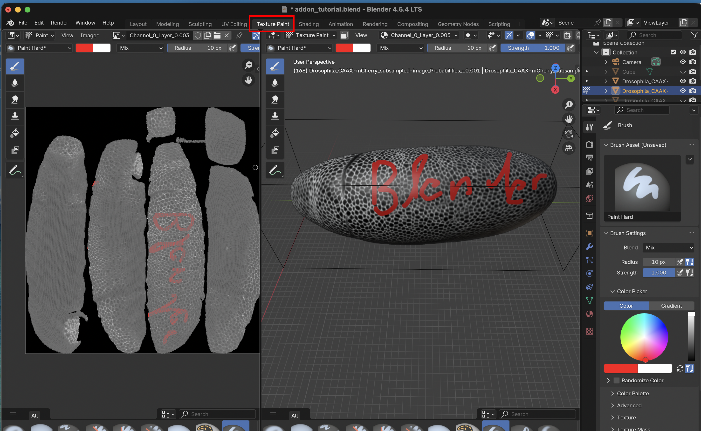
Not seeing anything? Your surface may be flipped “inside out”. Go toEdit Mode > Mesh > Normals > Flip.
Appendix: 3D segmentation with Ilastik
Here, we to use Ilastik to obtain a 3D image segmentation. This is the first step in the tissue cartography pipeline. The surface of interest data is then defined as the segmentation boundary, i.e. between “inside” and “outside”. Many tools are available for segmenting 3D data. The only thing that matters is that it provides you with a 3D mask as a multipage .tiff.
In our experience, Ilastik is a very robust and versatile segmentation tool, and we use it in most of our tissue cartography pipelines. This is why we recommend it as a starting point. Ilastik uses machine learning algorithms to segment and classify your data. You draw the labels on your data, and the algorithm predicts a segmentation. You correct the errors interactively until you are happy. Once trained, you can reuse Ilastik models for batch prediction.
Start by down sampling the 3D image dataset Drosophila_CAAX-mCherry.tif by 2x along each axis. This reduces the image size by 8x and will greatly speed up segmentation. This lower resolution is still more than sufficient to identify the embryo’s surface, which is relatively smooth. Save the result as a .h5 file (this makes Ilastik run faster). You can do this step in FIJI, or using python.
FIJI down sampling
“Image -> Scale” and choose 0.5 along each axis
“File -> Save as -> Save to HDF5 (new or replace)”
Python downsampling
Starting an Ilastik project
Download. We use ilastik binary pixel classification. Start Ilastik, and select binary pixel classification:
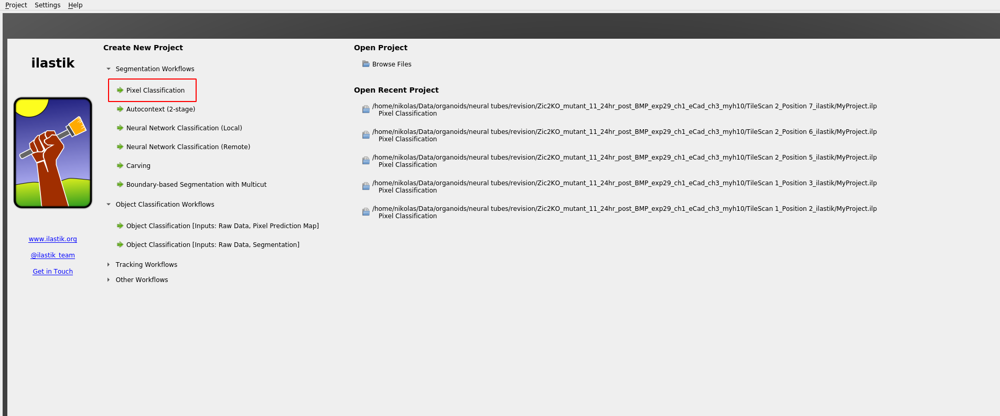
Save the project .ilp project. Click “add separate images” and select Drosophila_CAAX-mCherry.tif_subsampled.h5 (the image you just created).
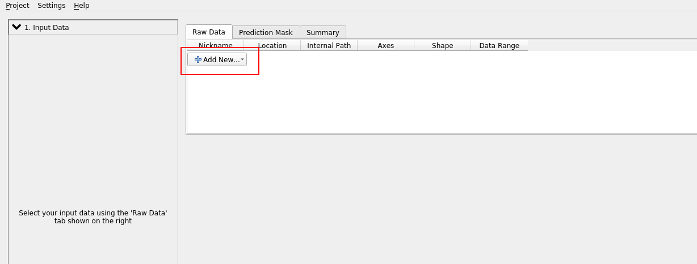
⚠️ Axis order
If Ilastik confuses the “channel” axis is the “z” axis, we can fix by right clicking on the dataset and “edit properties”:
Feature selection
Click on “Feature selection” on the left toolbar to continue. Ilastik applies a bunch of different image filters (like smoothing, or edge detection) to your data, and using the results as input for a machine-learning model. You now select which filters (“Features”) you want. In general, it is safe to just select everything. If you get an error, it may be the case that the size of the filter is bigger than the smallest axis (e.g. the \(z\)-axis) in your image. In this case, click the top bar to make the filter “2d”.
Training
We now continue to “Training”. Zoom in to one of the cross-sections, and paint the “inside” of the sample in yellow, and the “outside” in blue. You can also add more labels, but here we will just need two. You just need to make a few brush strokes and Ilastik will start making predictions. Click the “Live Update” button:
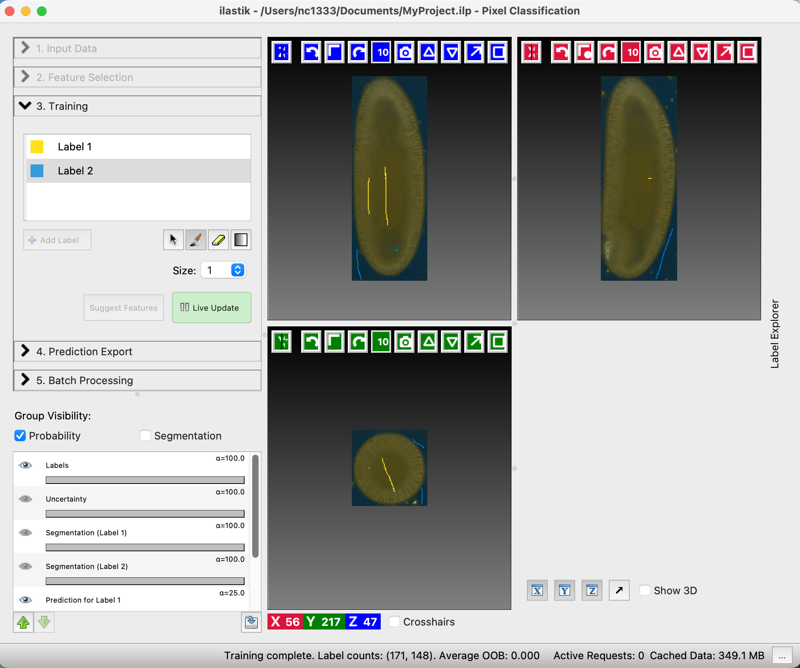
On the left, you can adjust the lookup table for your data, and decide what features of the prediction you want to see. “Uncertainty” shows you in light blue where the algorithm is still unsure. Now paint more labels until you are happy with the classification. Target the regions of high uncertainty, and look in all three cross-sections. It is important that the classification boundary tightly matches the surface you want to extract!
Prediction Export
Once you are happy with the results, let’s go to “Prediction Export” on the left toolbar. Use “Source: Probabilities” and click “Export all”. You can adjust the axis order and output format under “Choose Export Image Settings” if you need to.
Convert output to .tif
Ilastik saves the output - the segmentation - as .h5 file. To load the data into the add-on, you need to convert the .h5 to a .tif (directly exporting a .tif is very slow). To do this, you can use a little python script with a graphical user interface on the GitHub utils folder.
Install Python if you haven’t already. Then, in a command window, install the dependencies:
pip install h5py tifffile numpyRun the downloaded script:
python convert_h5_to_tif.py. It should open a window to convert.h5to.tif.
Batch processing
You can apply the Ilastik model to multiple datasets, using the “Batch Processing” tab on the left toolbar. In general, I recommend doing this only for datasets that are highly “comparable”, e.g. recorded with the same microscopy settings. Since it’s fairly easy and quick to train a new ilastik model for each dataset, trying to build a model that will work across all your recordings is often not worth it.
Attention: data normalization
If you plan on reusing the same model, it is recommended to normalize your data, so that the pixel values are always of the same approximate magnitude. Do this before you save the data as .h5’s, for example using the normalize_quantiles-function.